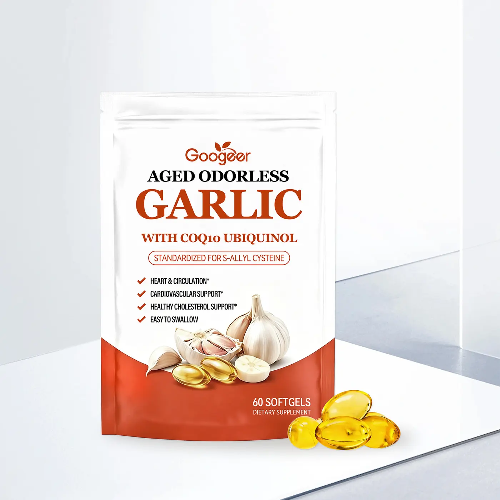
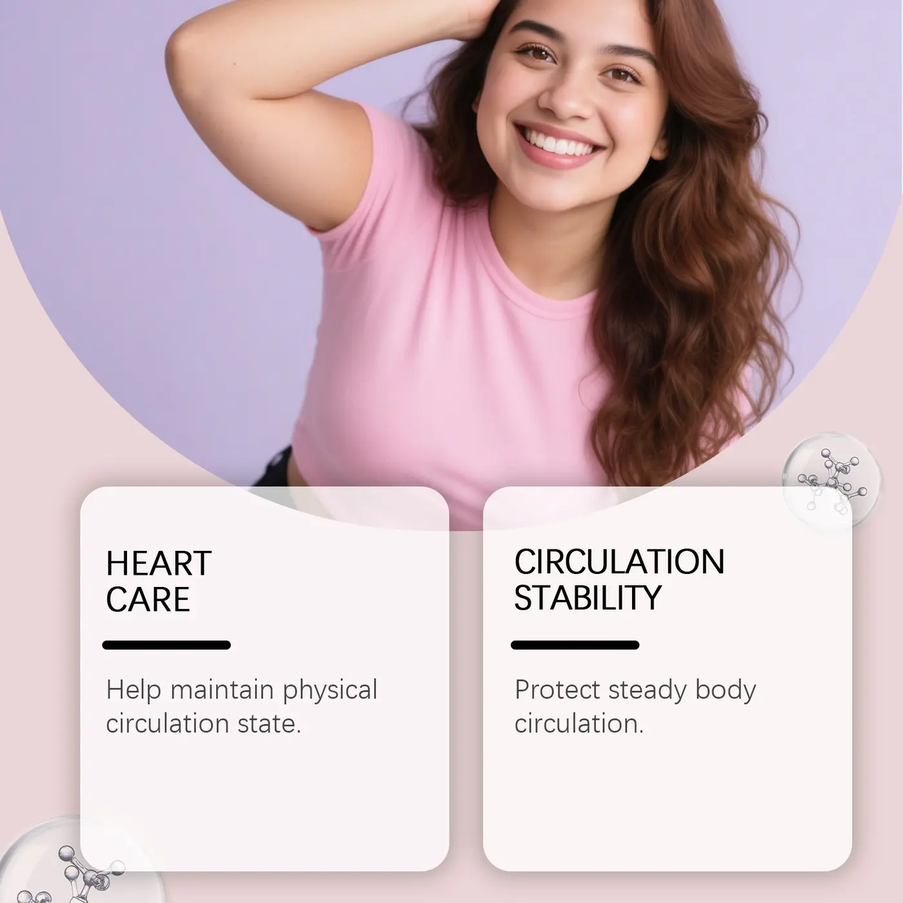
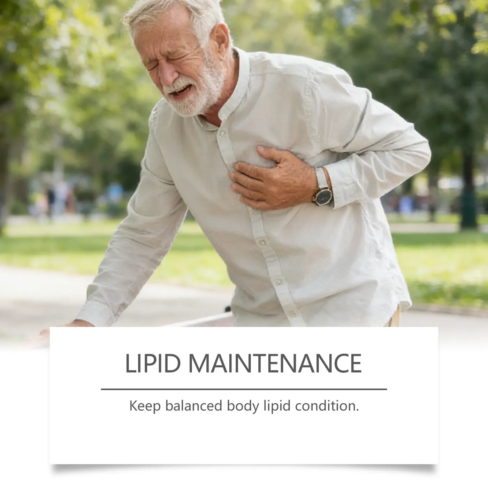

Verified from supplied material
- Aged garlic extract
- Vitamin K2 as MK-7
- CoQ10 as ubiquinol
These points support initial comparison and do not replace the approved master formula, Supplement Facts, COA or market compliance review.



Aged-garlic softgel concept paired with vitamin K2 and ubiquinol for heart-and-circulation product lines.
Specification note: Active amounts and standardized-marker specifications must be confirmed from the final facts panel.
These points support initial comparison and do not replace the approved master formula, Supplement Facts, COA or market compliance review.
MOQ, sample timing and production lead time are confirmed project by project.
Yes. Share your market, quantity and artwork status so the suitable route can be evaluated.
Product, quantity, market, pack count, packaging, formula and testing requirements.
No. They are product references. Final text, claims, colors and specifications require written approval.
Tell us your quantity, market and packaging. We will reply with the suitable route and missing information.
Discuss Aged Odorless Garlic Softgels